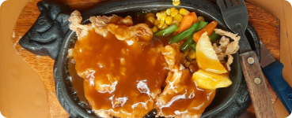

Nabila Steak
Jl. Menuju IPK 4, Tembalang, Semarang
Senin-Jumat (12.00-20.00) 📞 08191995999
Rp. 10.000- Rp. 25.000 /orang
Murce banget!! Bapak Ibu nya ramah!
Daging ayamnya empuk dan juicy di dalam, tapi tetap renyah banget di luar—pas digigit tuh kriuknya berasa! Bumbunya juga meresap sampai ke dalam, gak hambar. Saus steak-nya cocok banget, ada rasa gurih dan sedikit manis yang nge-blend sama ayamnya. Side dish-nya juga oke, kentangnya garing dan sayurnya masih segar. Overall, ini salah satu steak ayam krispi terenak yang pernah aku coba. Worth it banget buat harga segitu!
Nabila Steak

Harga dapat berubah sewaktu-waktu tanpa pemberitahuan terlebih dahulu.